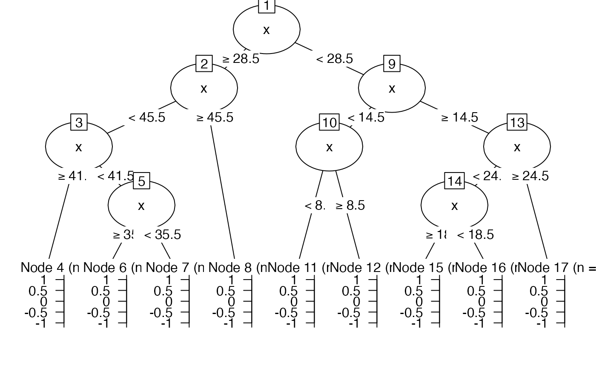
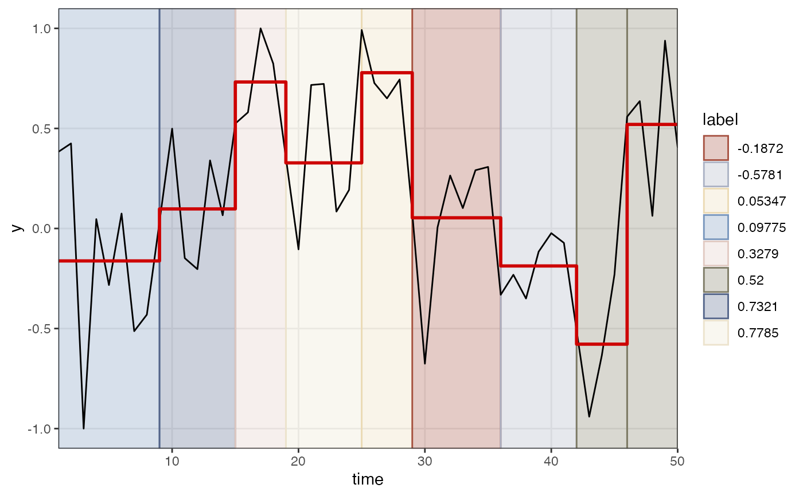

Find change indices
ts_changeindex( y, returnRectdata = FALSE, groupVar = NULL, labelVar = NULL, discretize = FALSE, nbins = 5 )
| y | An indicator variable representing different levels of a variable or factor |
|---|---|
| returnRectdata | Return a dataframe suitable for shading a |
| groupVar | Pass a value (length 1) or variable (length of y) that can be used as a variable to join the indices by if |
| labelVar | If |
| discretize | If |
| nbins | Number of bins to use to change a continuous |
Either a vector with the indices of change in y, or, a data frame with variables xmin,xmax,ymin,ymax,label
Other Time series operations:
ts_center(),
ts_checkfix(),
ts_detrend(),
ts_diff(),
ts_discrete(),
ts_duration(),
ts_embed(),
ts_integrate(),
ts_levels(),
ts_peaks(),
ts_permtest_block(),
ts_permtest_transmat(),
ts_rasterize(),
ts_sd(),
ts_slice(),
ts_standardise(),
ts_sumorder(),
ts_symbolic(),
ts_trimfill(),
ts_windower()
library(ggplot2) set.seed(1234) yy <- noise_powerlaw(standardise = TRUE, N=50, alpha = -1) tr <- ts_levels(yy, doTreePlot = TRUE)breaks <- ts_changeindex(tr$pred$p, returnRectdata = TRUE) breaks$cols <- casnet::getColours(length(breaks$label)) ggplot(tr$pred) + geom_rect(data = breaks, aes(xmin = xmin, xmax=xmax, ymin=ymin, ymax=ymax, colour = label, fill = label), alpha = .3) + scale_colour_manual(values = breaks$cols) + scale_fill_manual(values = breaks$cols) + scale_x_continuous("time", expand = c(0,0)) + geom_line(aes(x=x,y=y)) + geom_step(aes(x=x,y=p), colour = "red3", size=1) + theme_bw() + theme(panel.grid.minor = element_blank())